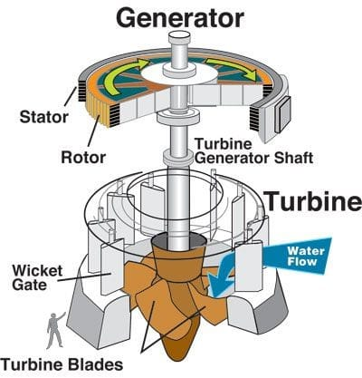
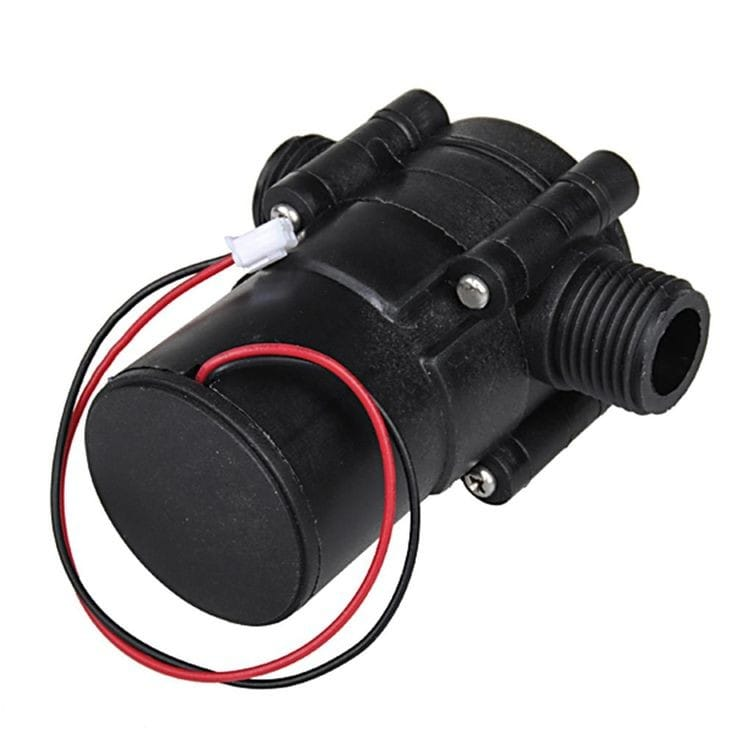
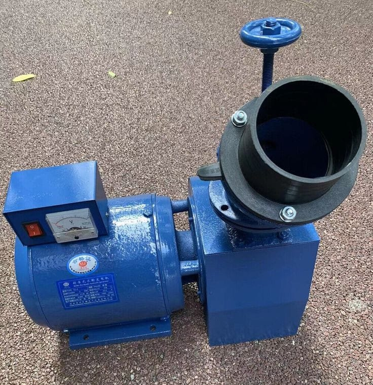

Hydroelectric Generators
Explore More Into It
By -Fantasy Energy Company-

The need for hydroelectric generators
To produce electricity cheaply with water and kinetic energy, you can use a hydroelectric generator. This type of generator uses the kinetic energy of flowing water to produce electricity. The generator works by using a turbine to spin a shaft, which is connected to a generator. The spinning of the shaft generates electricity. Hydroelectric generators are a clean and renewable source of energy, and can be used in small-scale applications such as powering homes or in larger-scale applications such as generating electricity for entire cities. 
A hydroelectric generator works by harnessing the power of flowing water to generate electricity. Here's how it operates:
- Water is stored in a reservoir behind a dam and allowed to flow through a channel, called a penstock.
- The force of the flowing water turns the blades of a turbine, which is connected to a generator.
- The generator converts the mechanical energy from the turbine into electrical energy.
- The electricity generated is then sent to a transformer, which increases the voltage and sends it to the power grid.
- Finally, the electricity is distributed to homes and businesses through power lines.

Hydroelectric generators are important sources of renewable energy. They use the power of falling or flowing water to generate electricity, which can then be used to power homes, businesses, and industries. Hydroelectric power is clean, reliable, and cost-effective, and it helps reduce our dependence on non-renewable sources of energy like fossil fuels. Additionally, hydroelectric power plants can help regulate water flow and reduce the risk of floods downstream. Overall, hydroelectric generators play a crucial role in our efforts to create a more sustainable future.